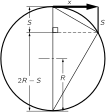
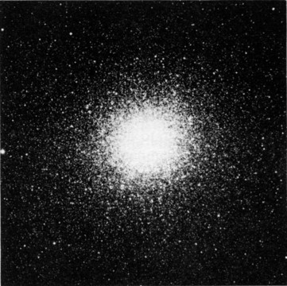
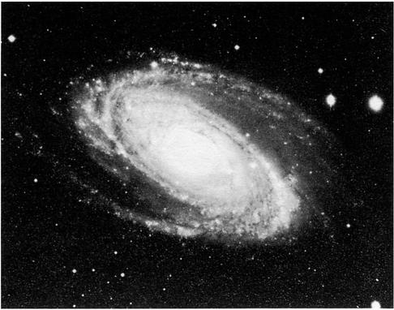
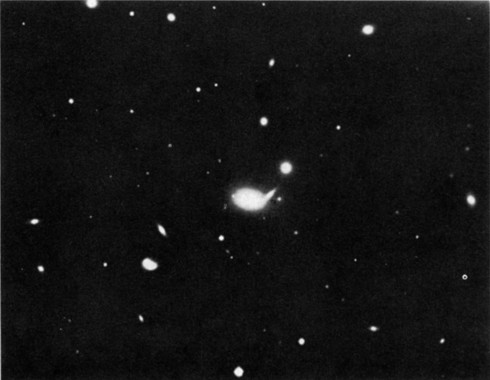
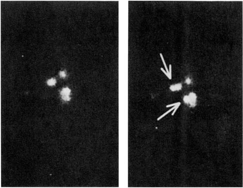

Глава 7. Теория тяготения
7–1 Движение планет#
В этой главе речь пойдет об одном из самых далеко идущих обобщений, сделанных когда-либо человеческим разумом. Мы заслуженно восхищаемся умом человека, но неплохо было бы постоять некоторое время в благоговении и перед природой, полностью и беспрекословно подчиняющейся такому изящному и такому простому закону — закону тяготения. В чем же заключается этот закон? Каждый объект Вселенной притягивается к любому другому объекту с силой, пропорциональной их массам и обратно пропорциональной квадрату расстояния между ними. Математическая запись этого утверждения такова:
Если к этому добавить, что любое тело реагирует на приложенную к нему силу ускорением в направлении этой силы, по величине обратно пропорциональным массе тела, то способному математику этих сведений достаточно для вывода всех дальнейших следствий. Но поскольку, как мы предполагаем, вы еще не столь талантливы, мы не оставим вас наедине с двумя голыми принципами, а обсудим их следствия более подробно. Мы изложим вкратце историю открытия закона тяготения, остановимся на некоторых выводах из него и на его влиянии на историю, на загадках этого закона и на уточнении его Эйнштейном; мы хотим еще обсудить связь закона тяготения с другими законами физики. Всего, конечно, в одну главу не уложишь, но в надлежащих местах других глав мы снова будем возвращаться к этому.
История начинается с древних; наши предки наблюдали движение планет среди звезд и в конце концов поняли, что планеты движутся вокруг Солнца — факт, заново открытый позже Коперником. Немного больше труда потребовалось, чтобы открыть, как именно они вращаются. В начале XVI столетия шли большие дебаты о том, действительно ли планеты обращаются вокруг Солнца или нет. У Тихо Браге на этот счет было свое представление, далекое от того, что думали древние: мысль его состояла в том, что все споры о природе движения планет разрешатся, если достаточно точно измерить положение планет на небе. Если измерения точно установят, как движутся планеты, то не исключено, что из двух точек зрения удастся отобрать одну. Это была неслыханная идея — чтобы открыть что-то, лучше-де проделать тщательные опыты, чем приводить глубокие философские доказательства. Следуя ей, Тихо Браге многие годы изучал положения планет в своей обсерватории на острове Фюн, близ Копенгагена. Он составил объемистые таблицы, впоследствии, после смерти Тихо, изученные математиком Кеплером. Из его данных Кеплер и извлек замечательные, очень красивые и простые законы, управляющие движением планет.
7–2 Законы Кеплера#
Прежде всего Кеплер понял, что все планеты движутся вокруг Солнца по кривой, называемой эллипсом, причем Солнце находится в фокусе эллипса. Эллипс — это не совсем овал, это особым образом точно определяемая кривая, получить которую можно, воткнув в фокусы по булавке, к которым привязана нить, натянутая карандашом; выражаясь математически, это — геометрическое место точек, сумма расстояний которых от двух заданных точек (фокусов) постоянна. Или, если угодно, это — окружность, видимая под углом к своей плоскости (фиг. 7.1).

Другое наблюдение Кеплера состояло в том, что планеты движутся не с постоянной скоростью: поблизости от Солнца — быстрее, а удаляясь — медленнее. Более точно: пусть планета наблюдается в два последовательных момента времени, скажем на протяжении недели, и к каждому положению планеты проведен радиус-вектор *. Дуга орбиты, пройденная планетой за неделю, и два радиус-вектора ограничивают некоторую площадь, заштрихованную на фиг. 7.2. Если такие же наблюдения в течение недели проделать в другое время, когда планета движется по дальнему участку орбиты (т. е. медленнее), то построенная таким же способом фигура окажется по площади равной прежней. Итак, в соответствии со вторым законом орбитальная скорость любой планеты такова, что радиус «заметает» равные площади в равные интервалы времени.

Наконец, третий закон был открыт Кеплером гораздо позже; этот закон другого рода, нежели первые два: он касается не одной только планеты, а связывает одну планету с другой. Этот закон утверждает, что если сравнить период обращения и размеры орбиты двух любых планет, то периоды пропорциональны 3/2 степени размеров орбит. Здесь период — это время, нужное планете для того, чтобы полностью обойти свою орбиту, а размер измеряется длиной наибольшего диаметра эллиптической орбиты, ее большой оси. Проще говоря, если бы планеты двигались по кругу (как они почти и делают), время одного оборота по кругу было бы пропорционально его диаметру (или радиусу) в степени 3/2. Итак, три закона Кеплера таковы: Каждая планета движется вокруг Солнца по эллипсу, в одном из фокусов которого находится Солнце. Радиус-вектор от Солнца до планеты «заметает» равные площади в равные интервалы времени. Квадраты периодов обращения любых двух планет пропорциональны кубам больших полуосей их соответствующих орбит: T\propto a^{3/2}.
7–3 Развитие динамики#
В то время, когда Кеплер открывал эти законы, Галилей изучал законы движения. Он пытался выяснить, что заставляет планеты двигаться. (В те дни одна из предлагавшихся теорий утверждала: планеты движутся потому, что за ними летят невидимые ангелы, которые взмахами своих крыльев гонят планеты вперед. Ныне эта теория, как вы вскоре увидите, несколько видоизменена! По-видимому, чтобы заставить планеты вращаться, невидимые ангелы обязаны витать во всевозможных направлениях и обходиться без крыльев. В остальном эти теории схожи!) И Галилей открыл одно знаменательное свойство движения, достаточное, чтобы понять эти законы. Это — принцип инерции: если при движении тела его ничто не касается, ничто не возмущает, то оно может лететь вечно с постоянной скоростью и по прямой. (А почему это так? Мы этого не знаем, но так уж оно повелось.)
Ньютон видоизменил эту мысль, говоря, что единственный способ изменить движение тела — это применить силу. Если тело разгоняется, значит, сила была приложена в направлении движения. С другой стороны, если его движение меняется на новое направление, значит, сила была приложена сбоку. Таким образом, Ньютон добавил мысль о том, что для изменения скорости или направления движения тела необходима сила. Если, например, привязать камень к бечевке и вертеть им по кругу, то, чтобы удержать его на окружности, нужна сила. Мы должны все время натягивать бечевку. Закон состоит в следующем: ускорение, производимое силой, обратно пропорционально массе. Или иначе: сила пропорциональна массе и ускорению. Чем массивнее тело, тем большая сила необходима, чтобы создать нужное ускорение. (Массу можно измерить, привязав к концу той же веревки другие камни и заставив их вращаться по тому же кругу с той же скоростью. Таким образом обнаруживают, что требуется большая или меньшая сила, причем для более массивного тела требуется большая сила.) Из этих рассуждений последовала блестящая мысль: чтобы удержать планету на ее орбите, никакой касательной силы не нужно (ангелам нет нужды летать по касательной), потому что планета и так будет лететь в нужном направлении. Если бы ничего ей не мешало, она бы удалилась по прямой линии. Но истинное движение уклоняется от линии, по которой тело двигалось бы при отсутствии силы, причем отклонение происходит как раз поперек движения, а не по движению. Иными словами, благодаря принципу инерции сила, потребная для управления движением планет вокруг Солнца, это не сила, вращающая их вокруг Солнца, а сила, направленная к Солнцу. (Если сила направлена к Солнцу, то Солнце, конечно же, может быть этим ангелом!)
7–4 Ньютонов закон тяготения#
Лучше других поняв природу движения, Ньютон прикинул, что именно Солнце может явиться источником, штаб-квартирой сил, управляющих движением планет. Он убедился (вскоре, быть может, убедимся в этом и мы), что «заметание» равных площадей в равные интервалы времени есть верный знак того, что все отклонения от прямой в точности радиальны, — или что закон площадей есть прямое следствие того, что все силы направлены точно к Солнцу.
Кроме того, из анализа третьего закона Кеплера можно вывести, что чем дальше от Солнца планета, тем слабее сила. Из сравнения двух планет на разных расстояниях следует, что силы обратно пропорциональны квадратам относительных расстояний. Сочетая оба закона, Ньютон пришел к заключению, что должна существовать сила, обратная квадрату расстояния и направленная по прямой между двумя телами.
Будучи человеком, склонным к обобщениям, Ньютон, конечно, предположил, что эта связь применима не только к Солнцу, удерживающему планеты, но что она носит более общий характер. Уже было известно, к примеру, что вокруг Юпитера обращаются луны, подобно тому как Луна ходит вокруг Земли, и Ньютону казалось естественным, что и планеты силой держат свои луны возле себя. Он уже знал о силе, удерживающей нас на Земле, и предположил, что эта сила всеобщая — что все притягивается ко всему.
Следующая задача состояла в том, притягивает ли Земля людей так же, как Луну (то есть обратно пропорционально квадрату расстояния). Если тело у поверхности Земли падает в первую секунду (из состояния покоя) на 16 футов, то на сколько падает Луна за то же время? Можно сказать, что Луна вообще не падает. Но если бы на Луну не действовала сила, она унеслась бы по прямой линии, а вместо этого она движется по кругу; так что на самом деле она падает с того места, где она оказалась бы, если бы силы вообще не было. Зная радиус орбиты Луны (около 240{,}000 миль) и время ее оборота вокруг Земли (примерно 27 дней), можно подсчитать, сколько она проходит по своей орбите за 1 секунду, а затем — на сколько она падает за одну секунду [2]. Оказывается, что это расстояние примерно равно 1/20 дюйма в секунду. Это хорошо укладывается в закон обратных квадратов, потому что радиус Земли равен 4000 милям, и если тело на расстоянии 4000 миль от центра Земли падает за секунду на 16 футов, то на расстоянии 240{,}000 миль, то есть в 60 раз дальше, оно должно падать всего на 1/3600 от 16 футов, что также составляет примерно 1/20 дюйма. Желая проверить эту теорию тяготения подобными расчетами, Ньютон их аккуратно проделал и получил настолько большое несовпадение, что счел теорию противоречащей фактам и не опубликовал свои результаты. Шестью годами позже новые измерения размеров Земли показали, что астрономы использовали неверное расстояние до Луны. Услышав об этом, Ньютон провел расчет заново, с исправленными цифрами, и получил превосходное совпадение.

Мысль, что Луна «падает», несколько смущает; почему же она тогда не приближается? Эта мысль настолько интересна, что заслуживает дальнейшего пояснения: Луна «падает» в том смысле, что отклоняется от прямой линии, по которой она бы двигалась, не будь больше никаких сил. Рассмотрим пример у поверхности Земли. Тело, выпущенное вблизи земной поверхности, упадет в первую секунду на 16 футов. Тело, брошенное горизонтально, также падает на 16 футов; хотя оно и движется горизонтально, за то же время оно все равно падает на те же 16 футов. На фиг. 7.3 показан прибор, демонстрирующий это явление. Из горизонтального желоба выскакивает и летит вперед шарик. С той же высоты вертикально падает вниз другой шарик (имеется электрическая схема, выпускающая второй шар как раз в тот момент, когда первый соскальзывает с желоба). Они сталкиваются в воздухе, это значит, что они за одинаковое время снижаются одинаково. Пуля, выпущенная горизонтально, может пролететь за одну секунду очень большое расстояние — быть может, 2000 футов, — но она все равно упадет на 16 футов, если она направлена горизонтально. Что случится, если пуля будет вылетать из ствола все быстрее? Не забудьте, что поверхность Земли кривая. Если мы выстрелим ее достаточно быстро, то, упав на 16 футов, она все равно останется на той же высоте над Землей, что и прежде. Как это может быть? Она всё так же падает, но Земля искривляется, так что получается падение «вокруг» Земли. Вопрос в том, какое расстояние она должна пройти за одну секунду, чтобы Земля оказалась на 16 футов ниже горизонта? На фиг. 7.4 изображена Земля с ее радиусом в 4000 миль и касательный прямой путь пули, по которому она двигалась бы в отсутствие сил. Если теперь воспользоваться одной из тех замечательных геометрических теорем, которая гласит, что наша касательная является средним пропорциональным между двумя частями диаметра, отсекаемыми равной хордой, то мы увидим, что пройденное по горизонтали расстояние есть среднее пропорциональное между 16 футами падения и диаметром Земли в 8000 миль. Квадратный корень из (16/5280)\times8000 получается очень близким к 5 милям. Таким образом, мы видим, что если пуля движется со скоростью 5 миль в секунду, то она будет продолжать падать к Земле с той же скоростью 16 футов каждую секунду, но никогда не приблизится к ней, потому что Земля уходит от нее вследствие своей кривизны. Именно так космонавт Гагарин удерживался в космосе, пролетая 25{,}000 миль вокруг Земли со скоростью примерно 5 миль в секунду. (У него это заняло чуть больше времени, поскольку он летел немного выше.)

Любое великое открытие нового закона полезно лишь тогда, когда из него можно извлечь больше того, что в него было вложено. Ньютон применил второй и третий законы Кеплера для того, чтобы вывести закон тяготения. Что же он предсказал? Во-первых, его анализ движения Луны был предсказанием, поскольку он связывал падение предметов на поверхности Земли с падением Луны. Во-вторых, вопрос в том, является ли орбита эллипсом? В одной из последующих глав мы увидим, как можно точно рассчитать движение, и действительно можно доказать, что это должен быть эллипс*, так что никаких дополнительных фактов для объяснения первого закона Кеплера не требуется. Так Ньютон сделал свое первое мощное предсказание.
Закон тяготения объяснил многие явления, прежде непонятные. Например, притяжение Луны вызывает на Земле приливы — явление дотоле таинственное. Люди и раньше догадывались, что Луна притягивает воду под собой и получается прилив, но они не были так умны, как Ньютон, и думали, что должен быть только один прилив в сутки. Считалось, что Луна притягивает воду под собой, вызывая прилив, и так как Земля вращается под ней, то в каждом месте вода должна подниматься и опускаться каждые 24 часов. На самом деле прилив поднимается и опускается каждые 12 часов. Была и другая школа мысли; по её мнению, прилив должен быть и на противоположной стороне Земли, потому что, как они утверждали, Луна оттягивает Землю от воды! Обе эти теории неверны. На самом деле всё происходит так: притяжение Луной Земли и воды «уравновешено» в центре. Но вода, которая находится ближе к Луне, притягивается сильнее среднего, а вода, которая находится дальше от неё, — слабее среднего. Кроме того, вода может течь, тогда как более твёрдая Земля не может. Истинная картина определяется сочетанием этих двух факторов.
Что мы понимаем под словом «уравновешено»? Что именно уравновешивается? Если Луна притягивает к себе всю Землю, то почему Земля не падает «вверх» на Луну? По той же причине, почему и Луна не падает на Землю: Земля вращается вокруг точки, которая находится внутри Земли (но не в ее центре). Не Луна вращается вокруг Земли, а обе они вращаются вокруг общего центра и обе падают на него, как показано на фиг. 7.5. Это движение вокруг общего центра и уравновешивает падение каждого из них. Так что и Земля тоже движется не по прямой линии, а по кругу. Вода на дальней стороне оказывается «неуравновешенной», потому что притяжение Луны там слабее, чем в центре Земли, где оно как раз уравновешивает «центробежную силу». В итоге этого нарушения равновесия вода поднимается, удаляясь от центра Земли. На ближней стороне притяжение Луны сильнее, и нарушение равновесия направлено в противоположную сторону в пространстве, но по-прежнему от центра Земли. В итоге получаются два приливных «горба».
7–5 Всемирное тяготение#
Что же еще можно понять, зная о существовании тяготения? Всем известно, что Земля круглая. А почему? Ну, это понятно: конечно, благодаря тяготению. Земля круглая просто потому, что между всеми телами существует притяжение, и все, из чего возникла Земля, тоже взаимно притягивалось до тех пор, пока было куда притягиваться! Точнее говоря, Земля не совсем шар; она ведь вращается, и центробежная сила на экваторе противодействует тяготению. Выходит, что Земля должна быть эллипсоидом, и можно даже получить правильную его форму. Итак, из закона тяготения следует, что и Солнце, и Луна, и Земля должны быть (приблизительно) шарами.
Что еще можно сделать с помощью закона тяготения? Если мы посмотрим на спутники Юпитера, мы сможем понять все в их движении вокруг этой планеты. Кстати, со спутниками Юпитера однажды возникло затруднение, о котором стоит упомянуть. Эти спутники очень тщательно изучались Рёмером, который заметил, что спутники иногда казались опережающими расписание, а иногда отстающими от него. (Расписание можно составить, подождав очень долго и выяснив, сколько времени в среднем требуется спутникам на один оборот.) Они опережали расписание, когда Юпитер находился особенно близко к Земле, и отставали, когда Юпитер был дальше от Земли. Это было бы очень трудно объяснить на основе закона тяготения — фактически, это означало бы гибель этой замечательной теории, если бы не нашлось другого объяснения. Если закон не работает даже в одном месте, где он должен работать, то он просто неверен. Но причина этого расхождения была очень простой и красивой: требуется некоторое время, чтобы увидеть спутники Юпитера, поскольку свет доходит от Юпитера до Земли не мгновенно. Когда Юпитер ближе к Земле, это время немного меньше, а когда он дальше от Земли — больше. Вот почему кажется, что спутники в среднем немного опережают расписание или немного отстают от него в зависимости от того, ближе они к Земле или дальше от нее. Это явление доказало, что свет распространяется не мгновенно, и снабдило нас первой оценкой скорости света. Это было сделано в 1676 году.
Если все планеты притягиваются друг к другу, то сила, управляющая, скажем, обращением Юпитера вокруг Солнца, — это не просто сила притяжения к Солнцу; ведь есть еще и притяжение, например, Сатурна. Эта сила не очень велика, так как Солнце гораздо массивнее Сатурна, но притяжение все же есть, и поэтому орбита Юпитера не должна быть точным эллипсом, да она им и не является; она немного отклоняется и «колеблется» вокруг правильной эллиптической орбиты. Такое движение несколько сложнее. Были предприняты попытки проанализировать движение Юпитера, Сатурна и Урана на основе закона тяготения. Чтобы узнать, удастся ли мелкие отклонения и неправильности в движении планет полностью объяснить только на основе одного этого закона, рассчитали влияние каждой из них на остальные. И вот, для Юпитера и Сатурна все сошло как следует, но Уран оказался «странным». Он вел себя очень необычно. Он двигался не по точному эллипсу, чего, впрочем, и следовало ожидать из-за влияния притяжения Юпитера и Сатурна. Но даже с учетом этих притяжений движение Урана все равно было неправильным, так что законы тяготения оказались под угрозой опровержения — возможность, которую нельзя было исключить. Двое ученых, Адамс и Леверрье, в Англии и Франции, независимо друг от друга пришли к другой возможности: быть может, существует еще одна планета, темная и невидимая, которую люди до сих пор не видели. Эта планета, N, могла притягивать Уран. Они рассчитали, где должна находиться такая планета, чтобы вызывать наблюдаемые возмущения. В соответствующие обсерватории они направили сообщения: «Господа, направьте свои телескопы в такое-то место — и вы увидите новую планету». Обратят ли на вас внимание или нет, часто зависит от того, с кем вы работаете. На Леверрье обратили внимание; они посмотрели, и вот она, планета N! Тогда и другая обсерватория поспешила провести наблюдения в ближайшие несколько дней — и тоже увидела ее.


Это открытие показывает, что в солнечной системе законы Ньютона абсолютно верны. Но распространяются ли они за пределы относительно малых расстояний до ближайших планет? Первая проверка заключается в вопросе: притягивают ли звезды друг друга так же, как планеты? Положительные доказательства этого мы находим в двойных звездах. На фиг. 7.6 показана двойная звезда — две близкие звезды (на снимке есть также третья звезда, чтобы мы знали, что фотография не перевернута). Они же показаны такими, какими они выглядели несколько лет спустя. Мы видим, что относительно «фиксированной» звезды ось пары повернулась, т. е. звезды ходят одна вокруг другой. Вращаются ли они в согласии с законами Ньютона? Тщательные замеры относительного положения одной из таких систем двойных звезд показаны на фиг. 7.7. Мы видим там прекрасный эллипс; измерения начаты в 1862 г. и доведены до 1904 г. (к настоящему времени должен быть сделан еще один оборот). Все сходится с законами Ньютона, за исключением того, что звезда Сириус А находится не в фокусе. В чем же дело? А в том, что плоскость эллипса не совпадает с «плоскостью неба». Мы смотрим не под прямым углом к плоскости орбиты, а если на эллипс посмотреть под наклоном, он остается эллипсом, но фокус уже смещается с прежнего места. Таким образом, мы можем анализировать двойные звезды, движущиеся одна вокруг другой, в согласии с требованиями закона тяготения.

Справедливость закона тяготения на еще больших расстояниях видна из фиг. 7.8. Нужно быть лишенным воображения, чтобы не увидеть здесь работы тяготения. Здесь показано одно из красивейших небесных зрелищ — шаровое звездное скопление. Каждая точка — это звезда. Нам кажется, будто у центра они набиты вплотную; происходит это из-за несовершенства наших приборов. На самом деле промежутки между звездами даже в середине очень велики, а столкновения крайне редки. Больше всего звезд в центре, а по мере удаления к краю их все меньше и меньше. Очевидно, что между этими звездами действует притяжение. Ясно, что тяготение существует и при таких гигантских размерах, возможно, в 100{,}000 раз превышающих размеры солнечной системы. Но отправимся дальше и рассмотрим всю галактику, показанную на фиг. 7.9. Форма этой галактики явственно указывает на стремление ее вещества стянуться. Конечно, доказать, что здесь действует именно закон обратных квадратов, нельзя; видно только, что и на таком гигантском протяжении существует притяжение, удерживающее всю эту систему от развала. Вы можете сказать: «Ладно, все это очень остроумно, но почему же это не просто шар?» Да потому, что она вертится и обладает моментом количества движения, от которого она не может освободиться при сжатии; ей приходится сжиматься в основном в одной плоскости. (Кстати, если вы ищете хорошую задачу: точные детали того, как образуются рукава и чем определяется форма этих галактик, еще не разработаны.) Ясно, однако, что форма галактики определяется тяготением, хотя сложность ее структуры пока не позволяет нам полностью ее проанализировать. В галактике мы имеем масштабы, возможно, от 50{,}000 до 100{,}000 световых лет. Земля находится на расстоянии 8\frac{1}{3} световых минут от Солнца, так что вы можете видеть, насколько велики эти масштабы.


По-видимому, тяготение существует и на еще больших протяжениях, на что указывает фиг. 7.10, где показано множество мелких «пятнышек», собранных вместе. Это облако галактик, подобное звездному скоплению. Стало быть, и галактики притягиваются между собой на таких расстояниях, так что они тоже собираются в скопления. По-видимому, и на расстояниях в десятки миллионов световых лет проявляется тяготение; насколько ныне известно, закон обратных квадратов действует повсюду.

Закон тяготения ведет не только к пониманию природы туманностей, но и к некоторым идеям о происхождении звезд. В большом облаке пыли и газа, подобном изображенному на фиг. 7.11, взаимное притяжение частиц пыли друг к другу может собрать их в маленькие комки. На фигуре едва видны «маленькие» черные пятнышки — быть может, начало скопления газа и пыли, которые благодаря своему тяготению начинают образовывать звезды. Приходилось ли нам когда-либо видеть рождение звезды — вопрос спорный. На фиг. 7.12 дано некоторое свидетельство того, что приходилось. Слева показан снимок области газа с несколькими звездами в ней, сделанный в 1947 г., а справа — другой снимок, сделанный всего лишь 7 лет спустя, на котором видны два новых ярких пятна. Уж не скопился ли здесь газ, не вынудило ли его тяготение собраться в шар, достаточно большой, чтобы в его недрах началась звездная ядерная реакция, превращающая его в звезду? Может быть, да, а может, и нет. Маловероятно, что нам так повезло увидеть, как всего за семь лет звезда стала видимой; но еще менее вероятно увидеть сразу две!

7–6 Опыт Кавендиша#

Тяготение, следовательно, распространяется на огромные расстояния. Но если сила существует между любой парой тел, мы должны быть в состоянии измерить силу между телами в наших собственных условиях. Вместо того чтобы наблюдать за вращением звезд вокруг друг друга, почему бы нам не взять свинцовый шар и маленький шарик и не посмотреть, как этот шарик движется к свинцовому шару? Трудность этого опыта, если проводить его столь простым образом, заключается в чрезвычайной слабости или, лучше сказать, тонкости этой силы. Его нужно проводить с исключительной осторожностью, то есть закрыть прибор кожухом, чтобы исключить влияние воздуха, убедиться, что он не заряжен электричеством, и так далее; тогда силу можно измерить. Впервые она была измерена Кавендишем с помощью прибора, схема которого показана на фиг. 7.13. Этот опыт впервые продемонстрировал непосредственную силу притяжения между двумя большими неподвижными свинцовыми шарами и двумя меньшими свинцовыми шариками на концах коромысла, подвешенного на очень тонкой нити, называемой крутильной нитью. Измеряя угол закручивания нити, можно измерить величину силы, убедиться в том, что она обратно пропорциональна квадрату расстояния, и определить, насколько она велика. Таким образом, можно точно определить коэффициент G в формуле
, ибо все массы и расстояния здесь известны. Вы можете возразить: «Все это для Земли было известно и раньше». Все, кроме массы Земли. Определив из этого опыта величину G и зная силу притяжения Земли, можно было косвенно определить ее массу! Опыт поэтому называют «взвешиванием Земли», и его можно использовать для определения коэффициента G закона тяготения. Это единственный способ определить массу Земли. G оказался равным
Трудно переоценить значение того влияния на историю науки, которое оказал этот великий успех теории тяготения. Сравните путаницу, неуверенность, неполноту знаний, царившие в прежние времена, когда велись бесконечные споры и возникали парадоксы, с тем, что представлял новый закон во всей своей четкости и простоте. Как важно было то, что все луны, все планеты, все звезды подчиняются столь простому правилу! Но еще важнее то, что человек оказался в состоянии понять это правило и предсказывать на будущее пути планет! Это определило быстрый, успешный рост науки в последующие годы; у людей появилась надежда, что и в других явлениях мира прячутся такие же простые закономерности.
7–7 Что такое тяготение?#
Но неужели это такой простой закон? А каков его механизм? Все, что мы сделали, — это описали, как Земля движется вокруг Солнца, но мы ничего не сказали о том, что заставляет ее двигаться. Ньютон не строил на этот счет никаких гипотез; он удовлетворился тем, что нашел, как это происходит, не вдаваясь в механизм явления. С тех пор никто так и не предложил никакого механизма. Физическим законам вообще свойствен этот абстрактный характер. Закон сохранения энергии — это теорема о величинах, которые нужно вычислить и сложить, причем о механизме здесь нет ни слова. Точно так же и великие законы механики — это количественные математические законы, для которых нет никакого механизма. Почему мы можем использовать математику для описания природы, не зная стоящего за ней механизма? Никто этого не знает. Мы должны продолжать двигаться дальше, потому что так мы узнаем больше.
Было предложено много механизмов тяготения. Интересно рассмотреть один из них, о котором время от времени задумывались многие люди. Сначала тот, кто «открывает» его, бывает очень взволнован и рад, но вскоре обнаруживает, что этот механизм неверен. Впервые он был открыт около 1750 г. Представьте себе, что в пространстве во всех направлениях с очень большой скоростью движется множество частиц, которые лишь незначительно поглощаются при прохождении через вещество. Поглощаясь, они передают Земле импульс. Однако, поскольку в каждом направлении их движется поровну, эти импульсы взаимно уравновешиваются. Но если рядом находится Солнце, частицы, приближающиеся к Земле сквозь Солнце, частично им поглощаются, так что от Солнца их проходит меньше, чем с обратной стороны. Следовательно, Земля ощутит импульс, направленный к Солнцу, и нетрудно видеть, что он будет обратным квадрату расстояния: таков закон изменения пространственного угла, под которым видимо Солнце, с ростом расстояния. Что же плохо в этом механизме? Неверны те выводы, которые из него следуют. Появляется новая забота: Земля в своем движении вокруг Солнца будет испытывать больше столкновений с частицами спереди, чем сзади (когда бежишь навстречу дождю, лицо мокнет больше, чем затылок!). Поэтому спереди Земля получит больше импульсов, чем сзади, и должна почувствовать сопротивление своему движению, а это сказалось бы на замедлении ее движения по орбите. Можно подсчитать, сколько времени понадобится Земле, чтобы в результате такого сопротивления остановиться; оказывается, не так уж много; а раз Земля все же движется по своей орбите, то вся эта механика не проходит. И не было предложено ни одного механизма, «объясняющего» тяготение, который бы не предсказывал добавочных, несуществующих явлений.
Рассмотрим еще возможную связь тяготения с прочими силами. В нынешнее время не удается свести тяготение к другим силам. Тяготение отнюдь не проявление электричества или чего-либо подобного, поэтому объяснения у нас нет. И все же тяготение похоже на другие силы, и любопытно посмотреть, в чем. К примеру, электрическая сила между двумя заряженными телами выглядит точь-в-точь как закон тяготения: электрическая сила равна постоянной величине со знаком минус, умноженной на произведение зарядов, и изменяется обратно квадрату расстояния. Она направлена в противоположную сторону — одноименные заряды отталкиваются. Но разве не удивительно все же, что в оба закона входит одинаковая зависимость от расстояния? Не исключено, что тяготение и электричество связаны значительно сильнее, чем мы думаем. Было сделано много попыток объединить их; так называемая единая теория поля — лишь одна из очень изящных попыток сочетать электричество с тяготением; но при сопоставлении тяготения и электричества самое интересное — это относительная величина этих сил. Любая теория, объединяющая обе силы, должна также вывести, насколько сильно тяготение.
Если мы возьмем в некоторых естественных единицах электрическое отталкивание двух электронов (универсальный заряд природы) и притяжение двух электронов из-за их масс, то мы сможем измерить отношение электрического отталкивания к гравитационному притяжению. Это отношение не зависит от расстояния и является фундаментальной константой природы. Оно показано на фиг. 7–14. Гравитационное притяжение относительно электрического отталкивания между двумя электронами составляет 1, деленное на 4.17\times10^{42}! Вопрос в том, откуда берется такое огромное число? Оно не случайно, как отношение объема Земли к объему тли. Мы рассмотрели два естественных свойства одного и того же предмета — электрона. Это фантастическое число есть естественная константа, так что оно затрагивает что-то глубокое в природе. Откуда могло взяться такое колоссальное число? Некоторые говорят, что однажды мы найдем «универсальное уравнение», и одним из его корней будет это число. Очень трудно найти уравнение, для которого такое фантастическое число было бы естественным корнем. Были придуманы и другие возможности; одна из них — связать его с возрастом Вселенной. Очевидно, нам нужно где-то найти еще одно большое число. Но имеем ли мы в виду возраст Вселенной в годах? Нет, ведь годы не являются «естественными»; они были придуманы людьми. В качестве примера чего-то естественного рассмотрим время, за которое свет проходит сквозь протон, — 10^{-24} секунды. Если мы сравним это время с возрастом Вселенной, 2\times10^{10} лет, то получим 10^{-42}. Оно имеет примерно столько же нулей, поэтому было предложено считать постоянную всемирного тяготения связанной с возрастом Вселенной. Если бы это было так, то постоянная тяготения менялась бы со временем, поскольку по мере старения Вселенной отношение возраста Вселенной к времени, за которое свет проходит сквозь протон, постепенно возрастало бы. Возможно ли, что постоянная тяготения меняется со временем? Конечно, эти изменения были бы столь малы, что убедиться в этом довольно трудно.
Вот один из способов проверить эту мысль: определить, каким было бы влияние этого изменения за последние 10^9 лет, что приблизительно составляет время от появления первой жизни на Земле до наших дней и одну десятую возраста Вселенной. За это время постоянная тяготения выросла бы примерно на 10 %. Оказывается, если рассмотреть структуру Солнца — баланс между весом его вещества и скоростью генерации лучистой энергии внутри него, — то можно сделать вывод, что если бы сила тяжести была на 10 % больше, Солнце оказалось бы не на 10 % ярче, а значительно больше: яркость его возросла бы как шестая степень постоянной тяготения! Если рассчитать, что происходит с орбитой Земли при изменении тяжести, то выяснится, что Земля тогда была бы ближе к Солнцу. В итоге Земля стала бы примерно на 100 градусов Цельсия горячее, и вся вода находилась бы не в море, а в виде пара в воздухе, так что жизнь не зародилась бы в море. Поэтому мы сейчас не верим, что постоянная тяготения изменяется с возрастом Вселенной. Все же подобные аргументы, вроде только что приведенного нами, не очень убедительны, и этот вопрос до конца не выяснен.
Как известно, сила тяготения пропорциональна массе — величине, которая по сути является мерой инерции, то есть мерой того, насколько трудно удержать тело, вращающееся по кругу. Поэтому два тела, тяжелое и легкое, движущиеся вокруг более крупного тела по одному и тому же кругу с одной скоростью под действием тяготения, будут оставаться вместе, потому что движение по кругу требует силы, которая тем больше, чем больше масса. Иначе говоря, сила тяготения больше для данной массы как раз в нужной пропорции, так что два тела будут вращаться вместе. Если бы одно тело находилось внутри другого, то оно и оставалось бы там; это совершенное равновесие. Поэтому Гагарин или Титов обнаружили бы, что предметы внутри космического корабля «невесомы»; если бы они, например, выпустили из рук кусочек мела, то он вращался бы вокруг Земли точно так же, как и весь космический корабль, и потому казался бы неподвижно висящим перед ними в пространстве. Любопытно, что эта сила в точности пропорциональна массе с огромной точностью, ведь если бы это было не так, то наблюдался бы какой-то эффект, из-за которого инерция и вес отличались бы. Отсутствие подобного эффекта было с огромной точностью проверено на опыте, выполненном впервые Этвешем в 1909 г. и более недавно повторенном Дикке. Для всех исследованных веществ масса и вес в точности пропорциональны с точностью до 1 части на 1{,}000{,}000{,}000 или даже более того. Это замечательный эксперимент.
7–8 Тяготение и относительность#
Заслуживает еще обсуждения видоизменение ньютонова закона тяготения, сделанное Эйнштейном. Несмотря на все вызванное им воодушевление, ньютонов закон тяготения все же неверен! Учтя требования теории относительности, Эйнштейн видоизменил этот закон. Согласно Ньютону, влияние тяготения мгновенно, то есть, если бы мы сдвинули массу, мы бы сразу почувствовали новую силу из-за нового положения этой массы; таким способом мы могли бы посылать сигналы с бесконечной скоростью. Эйнштейн выдвинул доводы, из которых следует, что мы не можем посылать сигналы быстрее скорости света, поэтому закон тяготения должен быть ошибочным. Если исправить его, учтя запаздывание, мы получим новый закон, называемый законом тяготения Эйнштейна. Одна из особенностей этого нового закона, которую довольно легко понять, состоит в следующем: по теории относительности Эйнштейна все, что обладает энергией, обладает и массой — массой в том смысле, что оно притягивается силой тяготения. Даже свет, обладающий энергией, имеет «массу». Когда луч света, несущий энергию, проходит мимо Солнца, Солнце притягивает его. Поэтому свет идет не по прямой, а отклоняется. Например, во время солнечного затмения звезды, окружающие Солнце, должны казаться сдвинутыми с того места, где они находились бы, если бы Солнца не было, и это действительно наблюдалось.
И наконец, сопоставим тяготение с другими теориями. В последние годы выяснилось, что любая масса обязана своим происхождением мельчайшим частицам и что существует несколько видов взаимодействия, например ядерные силы и т. п. Ни одна из этих ядерных или электрических сил пока тяготения не объясняет. Квантовомеханические стороны природы мы еще пока не распространили на тяготение. Когда на малых расстояниях начинаются квантовые эффекты, то тяготение оказывается еще настолько слабым, что нужды в квантовой теории тяготения не возникает. С другой стороны, для последовательности наших физических теорий было бы важно понять, должен ли закон Ньютона с внесенным Эйнштейном видоизменением быть изменен и дальше с тем, чтобы согласовываться с принципом неопределенности. Это последнее видоизменение пока не сделано.